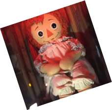
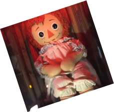
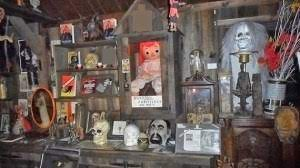

SPOOKY DMB
ANNABELLE

Cette histoire remonte dans les années 70, lorsqu’une mere decide d’acheter une poupée de chiffon, venant d’un ouvrage célèbre nommé Raggedy Ann Stories. Par la suite, elle décide de l’offrir à sa fille Donna de 28 ans, qui était à ce moment-là en collocation avec sa meilleure amie,Angie. Au début, rien de tres alarmant,Donna constate seulement qu'elle ne la retrouve jamais dans la position dans laquelle elle l'avait laissée et se dit qu'elle a dû déplacer la poupée par inadvertance. Cependant plus le temps passe, plus les déplacements de la poupée se font fréquents et important. Les filles ont commencés à s’inquiété lorsque la poupée se mit en l’évidation et qu’elles retrouvaient des mots sur des parchemins. elle décident alors d’appeler une médium qui leurs révèle que la poupée est possédée par une fillette de 7 ans ce nommant Annabelle Higgins qui serait morte il y a de longues années. Touchée par son histoire, elles décident de garder la poupée. Cependant Lou,le petit-ami d’Angie Annabelle, est persuadé qu’elle est maléfique et insite pour que les filles s’en débarrasse. Alors qu’elle n’avait jamais été violente auparavent essaya d’étouffer lou et lui laissa des marques de griffure. Donna et Angie finissent par demander de l’aide autour d’elles et on finit par leurs recommandés le couple Warren.
 

texte



texte